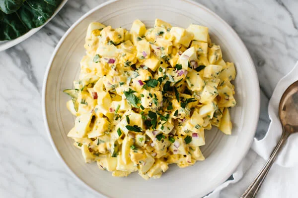

Darn Tootin' Good Egg Salad

Egg salad so delicious that will have your grandma questioning everything she knows. Whip it up and serve it at Sunday brunch to show Pastor John what the goodness of God is really about.
Ingredients
- 6 eggs, room temperature
- 1/4 cup red onion, finely diced
- 1/4 cup mayonnaise
- 1 tbsp Dijon mustard
- 2 tbs parsley, finely diced
- 2 tbs chives, finely diced
- 1 tsp lemon juice
- salt and pepper, to taste
steps
- Bring a pot of water to a boil. Then turn the heat to low so there's no bubbles. Use a skimmer to slowly and gently place the eggs in the pot. Turn the heat back to high and boil the eggs for 12 minutes
- Transfer the eggs to an ice water bath for a few minutes to stop the cooking process and cool
- Once your eggs are cool to touch, peel and discard the eggs shells. Cut the hard boiled eggs to your desired size (I prefer chunky). Then add the eggs, red onion, chives, parsley, mayonnaise, Dijon mustard, and lemon juice to bowl and stir all ingredients together
- Season with salt and pepper and serve in a bowl, in a sandwich, or in a wrap
Notes
- The eggs may crack if you introduce cold eggs straight to the boiling hot water. So I leave my eggs out prior to boiling, or run them under lukewarm water for a few seconds, as well as turn off the boil right before you introduce the eggs
- I use a skimmer to introduce the eggs to boiling water so they don't slam into the bottom of the pan and crack
- Definitely use Dijon mustard rather than yellow mustard. The spicier flavor makes all the difference
- You can store egg salad for up to 3-4 days in the fridge